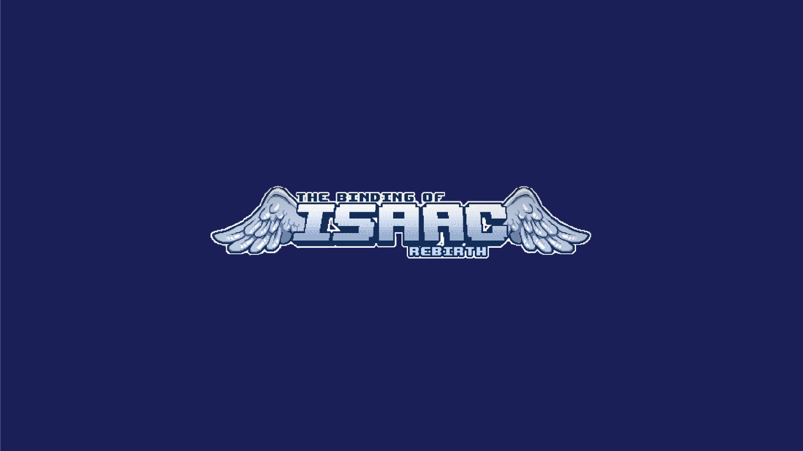

The Bindig Of Isaac Game Table
Trabajo de 3D que consiste en realizar un video promocional de un juego de mesa basado en un videojuego real.
Trabajo Universitario realizado junto a Juan Sevilla, Luica Terrón y Rosa Garcia.
Ver el video

Escenario Postapocalíptico
Escenario realizado para realizar una animación y utilizarlo de fondo, diseñado en Photoshop y modelado en 3ds Max.
Ver el video
Presentación de concepto para Future Lions "Lego"
Trabajo realizado junto a Juan Sevilla
Ver el video
Modelado silla Barcelona
Modelado de la silla Barcelona con el fin de utilizar este modelo en cartelería.

Beethoven 2020
Cartel realizado en Illustrator para el aniversario de Beethoven,el objetivo era realizar un síntesis entre la persona y su obra.

Seminci 2020
Cartel realizado para el concurso de cine de Seminci en Valladolid. Uso de vectores y photoshop para representar desde mi punto de vista el cine.
Autoretrato Personal
Autorretrato realizado para poner en conjunto la mayoría de conocimientos de Photoshop e Illustrator y representarme de una manera creativa.
Diseño de personajes
Diseño de personajes haciendo un mix entre un búho y Dr House.
Trabajo Fotográfico
Trabajo fotográfico con el objetivo de realizar la foto para una promoción de zapatillas Nike.
Diseño de Marca y Branding
Concepto desarrollado para la publicidad y creación de una empresa cuyo producto principal son los tomates cherrys.
Ver presentación
Portada Ilustrada "La Metamorfosis"
Portada ilustrada con técnicas tradicionales para la cubierta de La Metamorfosis de “Kafka”.
Motion Cinema 4D
Ver el video


{kind=link}
{kind=link}
{kind=link}
{kind=link}
{kind=link}
{kind=link}
{kind=link}
{kind=link}
{kind=link}